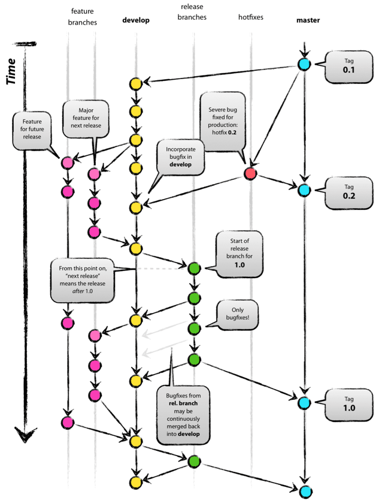

Week 1 Introduction
Greenfield vs Brownfield Development
- Greenfiled development
- Creating a software system from scratch
- Brownfield development
- Adding functionality to an existing(network of) computer systems
- Fixing bugs
- Adding small features
- Adding whole sub-systems or systems
Week 2 Building and Testing Open Source Software
Build Automation
- All this points to the need for the build process to be automated
- Build automation tools:
- Maven, Ant, Gradle, make, Rake, MSBuild, NAnt, ...
- Aim: make build:
- Painless to initiate
- Completely repeatable
- Quick!
Run the tests
- Release pipeline gateways:
- Code review
- Coding standards/documentation procedures
- Automated tests
Link to the Exam
Could be questions on any aspect of the build and test process.
Week 3 Code comprehension
Learning Unfamiliar Codebases
Code reading
- Goal: build a mental model of the codebase by acquiring
- Application domain knowledge
- General programming knowledge
- Use systematic reading strategies
- Top-down
- Bottom-up
- Tip: assume previous coders were sensible and honest
Comprehending Marauroa
Omitted
Learning unfamiliar codebases
- Acquire knowledge gradually through the top-down reading strategy
- Packages and classes are hierarchical
- Location is indicator of relevance
- Extract meaning from names
- Open files and skim
- Use different sources
- Don't read everything
- Trust the previous developer
Unit testing overview
Unit testing: what, why & when?
- Replicating problems is key to bug fixing
- However, Marauroa is a game engine, even if we build a toy game it could take ages to replicate bug
- Unit testing is an elegant and maintainable way of executing pieces of code
- Test-driven development lifecycle: test->implement->refactor
Unit testing: terminology
- terminology
- test fixture
- code under test
- unit test
- test coverage
- integration test
- Organization
- Where deploy tests?
- Which part of the code to test?
JUnit annotations
| Annotation | Usage |
|---|---|
| @Test | in dicates the method as a test method |
| @Before | to execute a method before a test |
| @BeforeClass | to execute a method before all tests |
| @After | to execute a method after a test |
| @AfterClass | to execute a method after all test |
JUnit statements
| Statement | Usage |
|---|---|
| assertTure(String message, boolean condition) | Checks that the boolean condition is true |
| assertFalse(String message, boolean condition) | Checks that the boolean condition is false |
| assertEquals(String message, expected, actual) | Tests that two values are the same |
| assertNull(String message, object) | Checks that the object is null |
| assertNotNull(String message, object) | Checks that the object is not null |
Unit test reading & writing
What can we learn from unit test reading?
- Unit test indicate trace of
- Critical and key pieces of code
- Tricky parts of the code
- Sensitive excerpts
- Bugs that were repaired in the past
- Marauroa has a dedicated package with tests
- Check marauroa.common.RPObjectTest.java
- What can we learn about the class being tested?
- Start reading the method under the @Before clause
- How is it structured and which are its dependencies?
- Which is the main data structure?
Testing worlds, zones and objects
就是个课上老师带着做的练习，不清楚考不考啊，如果觉得有必要自己稍微过一下源码吧
- There is one world which can contain N zones and zones contain objects
- Find the classes in Marauroa
- Object: marauroa.common.game.RPObject
- Zone: marauroa.server.game.rp.MarauroaRPZone
- World: marauroa.server.game.rp.RPWorld
- Let's test whether
- There is only one instance of World
- If Zones are actually added to Worlds
- If Objects are actually added to Zones
- If Objects are destroyed when removed from Zones
- Test there is only one instance of World
- Get two instances of World
- Use a JUnit a statement to compare the two instances
- Test if Zones are actually added to Worlds
- Get an instance of the world
- Create a new Zone
- Add the new Zone to the World
- Use a method from the World class to check if our Zone belongs to the World
- Use a JUnit a statement to check the above
- Test Objects are actually added to Zones
- Create a Zone and create an Object
- Set an identifier to the Object
- Add the object to Zone
- Use a method from the Zone class to check if our Object belongs to the Zone
- Use a JUnit a statement to check the above
- Test Objects are destroyed once they are removed
- Same as above until step e
- Remove object from zone
- Use a method rom the Zone class to check if our Object belongs to the Zone. Use JUnit.
Week4 Git workflows and Code reviews
Git workflows

Basic Git
Git is a distributed version control system
The life cycle of a file under git's control:

Basic git commands and their interaction with various repositories:
Git Commit
- A commit should represent one conceptual change to your work
- Expressed in one sentence
- One commit per bug
- Do commit frequently
- Do not comit unfinished things
- Write meaningful messages
Git Branching
- Branches are used to develop freatures isolated from each other.
- The master branch is the "default" branch when you create a repository
- Use other branches for development and merge them back to the master branch upon completion.
Git workflows
- Branching allows a wide variety of strategies
- This flexibility can result in complex, intertwined and messy ways of developing code
- Using Git stops being efficient
- A 'code of conduct' or protocal or conventions are needed
- Patterns for Git use: Git workflows
Git workflows(2)
The GitFlow model:

- Two main branches
- Master: production code
- Develop: latest development
- Supporting branches
- Feature branches
- Hotfix branches
- Release branch
- Positive aspects
- Popular workflow
- Negative aspects
- Still complex!
Git workflows(3)
- The GitHub Flow model as a reaction
- Master branch
- Feature branches
- GitHub Flow assumes you are able to deploy every time you merge a feature branch
- Simplification and reduction of branch types
- GitLab Flow simplifies this even more
- Confusion: different repository managers use different terminology for merging!
- Gitlab and Gitorious: merge request
- GitHub and BitBucket: pull request
Code reviews
- Having the coder reviewed by somebody else is good
- It can be done in several ways:
- Formal meeting with a projector and code is checked line by line
- 'Over the shoulder'
- Pair programming
- Tool based
- It improves the quality, readability and maintain ability of software
- It has an average of 60% of defect removal rate (even 85%) vs. 25% of unit testing
Code review: what to report
- Code review rates should be between 200 and 400 lines of code per hour
- What sort of issues?
- Design issues
- Possible errors
- Coding style issues
- Testing issues
- Rewards: positive comments
- How to do the reviews?
- Be nice
- Be constructive (somebody else will look at yours!)
- It's good for your own soft skills
Code reviews in the GitLab workflows
- GitLab provides a online platform to discuss the code
- Code reviews on merge requests
- Assign the request to somebody else
- This person will verify(through code reviews)
- If happy with request they accept the merge
- If not they may require further work
Week5 Cost Estimation and Planning
Cost Estimation
Definition
Cost estimation: Estimating the effort, resources and schedule for software projects.
Building a plane!!!!!!!!!!!!!!!!!!!!!!!!
omitted.................
Things that make estimating hard
- Process
- Poor management
- Which units should we use?
- Deadlines
- Bigger teams need more communication
- Unknowns
- Lack of experience
- Unforeseen problems
- Unfamiliar tools
- Complexity
- Variable quality of materials
- External issues over which we have no control
- Distractions
- Relying on other people / services
- Different opinions
- Over optimism or pessimism
Things that can help you estimate
- Having a clear view of your objectives
- Focused scope
- Experience
- Removing uncertainty
- Shared experience
- Familiarity with
- Process
- Team members
- Tools
- Resources
- Code/application (estimating gets easier as project goes on)
- Interest
- Easier to estimate if you are engaged
- Reuse of resources
- Templates
- Designs
- Components
- Honesty
Chaos Report (Standish Group)
- Successful projects:
- Large companies 9%
- Medium companies 16%
- Small companies 28%
- Cost overruns
- Time overruns
- Content deficiencies
- Around half of IT Executives think there are more project failures now than there used to be.
Week 6 Design for Testability
Design for Testability?
- What is Design for Testability?
- Making sure that we can test what we build
- Why Design for Testability?
- So that we can test what we build in isolation
- What prevents testability
- Complexity
- Non-deterministic code (different every time)
- Hard coding implementation in the wrong place
- Not allowing inheritance
- Breaking the Law of Demeter
Be careful of new
- Avoid new unil you really have to use it
- The most common form of hardcoding
- Nails down the exact implementation of an object
- Methods should only instantiate objects we don't want to substitute
Test doubles (测试替身这个翻译不错)
- "Pretend" objects used in place of real objects for testing purposes
- Dummy objects
- Passed around but never actually used. Often used to fill parameter lists
- Fake objects
- Have working implementations. Usually take shortcuts which makes them unsuitable for use in production
- Stubs
- Provide canned answers to calls made during the test, sually not responding anything outside the test
- Mocks
- Pre-programmed with expectations which form a specification of the calls they are expected to receive
Mocks
- When "mocking" we create a special subclass of something to help us test something else
- With this subclass (a mock) we can
- Control certain aspects of a class's behavior
- Fix return values
- Verify that certain behaviours occur
- Methods called the correct number of times
- Control certain aspects of a class's behavior
Week7 Design Patterns, Offensive and Defensive Coding
Patterns
- Reusable solutions to recurring problems that occur during software development
- Not necessarily the same code
- Same structure
- Can be used in discussions among programmers who know them
- Know that we're talking about the same thing
- More effectively collaborate
- Mark Grand, "Patterns in Java"
Common patterns: Singleton and Factory (这里课件上没啥内容，补充材料里至少要看第五章的这两个设计模式，至少)
- Can you find any instances of the Singleton and Factory Method patterns in the Marauroa code?
- Use Mark Grand Chapter 5 (in moodle) as a reference
- Forces and Consequences
- In which situations are they used?
- Why?
- Use Mark Grand Chapter 5 (in moodle) as a reference
- Can you spot any problems with some uses of Singleton in the code?
- How might use of the Factory pattern relate to testability?
UI patterns(这里自己要补充么？)
omitted
Coding styles: Defensive programming
- A blanket term for various practices to increase code stability once it is in production
- Pros
- "Defend against the impossible, because the impossible will happen"
- Systems will not fail, but try as hard as possible to continue
- Even in the face of unexpected user input or actions
- Aids maintenance
- Higher quality code: readable and comprehensible
- Cons
- The impossible cannot happen so why defend against it?
- New people join the team, new features, etc
- Hurts maintenance
- Hides bugs, bad for testability
- Defensive coding often degenerates into paranoid programming
- The impossible cannot happen so why defend against it?
A note on assert
- assert is used to verify the correctness of an invariant in the code
- Should never trigger in production code
- Turned off by default
- Should be on during testing
- Turn on with -ea option on the java command
- Do not use assert to check public method parameters!
- Use Exceptions
- Do use assert to check post-conditions
Paranoid programming vs testability
omitted (自己看图，不代表不重要)
Code styles: Offensive programming
- "The best defence is a good offence" - Anon
- Pros
- Don't silently ignore errors, let them happen!
- Force bugs to be detected and fixed as soon as possible
- Simpler code(less error checking)
- Errors shipped to the customer will be obvious
- Easier to get management buy-in to fix them?
- No results better than wrong results?
- Cons
- Errors shipped to the customer will be obvious
- Low quality more obvious
- Errors visible to everyone
- Errors shipped to the customer will be obvious
- More crashes
- Real-time life-critical systems won't try to recover
Week8 Refactoring and code migration
What is refactoring?
- "Refactoring changes structure, not behaviour"
- What do we mean by "behaviour"?
- The function that is performed by the code
- The interface that the code presents to the world
- API
- More obvious in object-oriented programming
Testing and refactoring
- "Refactoring changes structure, not behaviour"
- Behaviour must be exactly the same after refactoring
- Good tests are essential for refactoring
- Must start and finish in known good state
- Refactoring workflow:
- Runtests (start from known good state)
- Refactor
- Run tests (finish in the same known good state)
Changing interfaces vs refactoring
- "What if I split a complex method up into smaller private methods?"
- This is a refactor; the interface is not changed
- Run tests to ensure they pass
- Refactor
- Re-run entire test suite to check for regressions
- This is a refactor; the interface is not changed
- "What if I combine similar functionality from two private methods into a single one?"
- This is a refactor; the interface is not changed
- Run tests to ensure they pass
- Refactor
- Re-run entire test suite to check for regressions
- This is a refactor; the interface is not changed
- "What if I am removing a public method, and no longer need the test?"
- Not a refactor; you are changing the interface
- Run tests to ensure they pass
- Remove the test
- Remove the method
- Re-run entire test suite to check for regressions
- Not a refactor; you are changing the interface
- "What if I am moving a public method between two classes?"
- Not a refactor; you are changing the interface
- Run tests to ensure they pass
- Change the test so that it tests the code in its new location
- Move the code to the new class
- Re-run entire test suite to check for regressions
- Not a refactor; you are changing the interface
How do I know when to refactor?
- Look out for
- Complexity
- Assignments, branches, calls (ABC)
- Cyclometric complexity
- Consider refactoring high scoring methods
- Structural similarity
- Consider refactoring similar code
- Don't search by hand, use tools
- Complexity
Refactoring with your IDE
Omitted
Refactor operations
Simple tasks
- Rename...; Move...
- Fields, local variables, types, packages, etc
- Changemethod signature...
- Keep originalas delegate
- Deprecate original
- Encapsulate field...
- Replaces all references to a field with getter and setter methods
Super-type/sub-type operations
- Use super-type where possible...
- Replace occurrences of a type with one of its super-types where possible.
- Pull up...
- Move a field/method to a superclass
- Declare the method abstract in the superclass
- Methods only
- Push down...
- Move a set of methods and fields from a class to its subclasses
Extracting structure
- Extract local variable
- Creates a new variable assigned to the current selection
- Replaces the selection with a reference to the new variable
- Extract method
- Creates a new method containing the current selection
- Replaces the selection with a reference to the new method
- Useful for refactoring lengthy, cluttered, or overly-complex methods
- Extract superclass...
- Extracts a common superclass from a set of sibling types
- The selected sibling types become direct subclasses of the extracted superclass
- Maybe re-run "Use super-type where possible..."
- Extract interface...
- Creates a new interface with a set of methods
- Makes the selected class implement the interface
Week10 Domain Specific Languages (DSL)
What is a domain?
- Area of interest
- Scientific specialty
- Bounded
- Overlapping
- Examples
- Computer Science
- Software Engineering
- Human Computer Interaction
- Computer Science
Domain Specific Languages
- Domain Specific Languages are very common
- They underpin many key technologies
- Also known as
- Little languages
- Minilanguages
- Mostly textual
- Ideally more natural looking than general code
DSL examples
- Web
- HTML, CSS, JavaScript, XSLT
- Development tools
- make, rake, ant, lex, yacc, Emacs Lisp
- Databases
- SQL, HQL, Object/Relational Mapping in general
- Tyesetting utilities
- TeX, LaTeX troff, groff, PostScript
- Unix tools
- sed, awk, bc, m4
- Other
- Regular expressions, Office macros, MATLAB
DSLs vs general-purpose languages
- Design goals contrast those of general languages
- Less complex/comprehensive
- Smaller syntex (fewer opportunities for bugs?)
- Focussed on a particular domain
- More expressive
- Optimized for tasks within a domain
- Both of the above mean a DSL in unlikely to be of general use outside their domain
Why use a DSL?
- Allow domain experts to develop systems
- Express solutions in the problem domain
- Run time configurations of complex systems
- Emacs, Stendhal
- Simplified recipe scripts
- Build systems, installers
- Connect two or more different languages or services
- ColdFusion Markup Language
- Generate models and services in multiple languages
- One source multiple targets(e.g. Ruby on Rails)
DSL implementation styles
- Internal
- Uses the syntax of a host language
- Already have a parser and run time
- Easier in flexible, low ceremony languages
- Ruby, Groovy, Lisp
- Uses the syntax of a host language
- External
- Custom syntax
- Need to write code to parse and run it
- Typical example: XML-style configuration files
- Custom syntax
- Interpreted
- Read the DSL script and execute it at run time
- More natural in interpreted languages
- Good for configuration at run time
- Read the DSL script and execute it at run time
- Code generation
- Read the DSL script and generate code
- In a general purpose language
- Often C, C++, Java
- May then also need to be compiled
- In a general purpose language
- Not suitablefor run time configuration tasks
- Read the DSL script and generate code